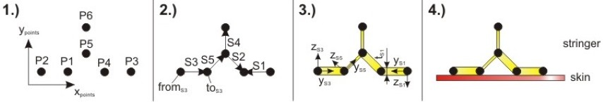
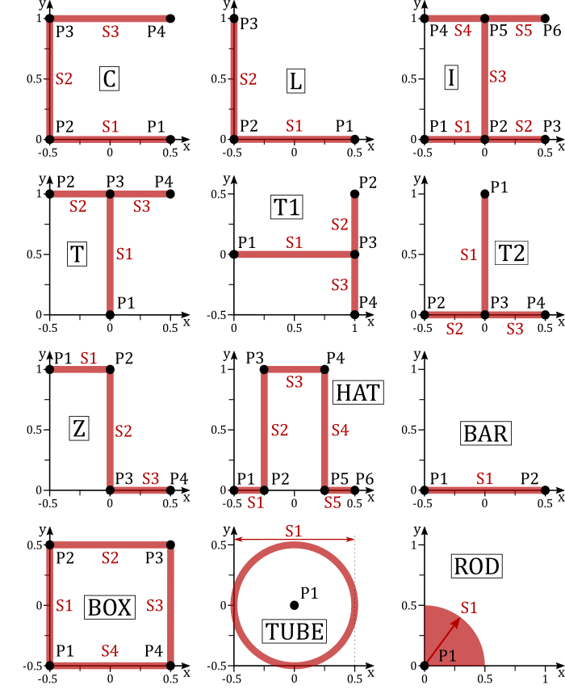

complexType · extension complexBaseType · sequence
Structural elements based on profiles
The ProfileBasedStructuralElement type containins the data of a structural element, that are based on 2-dimensional profiles.
There are three approaches to model profile based structural elements:
In the section globalBeamProperties the properties of the structural profile in an equivalent beam representation are defined.
The structuralProfileUID element refers to the uID of the structuralProfile2D element. As described in the corresponding documentation, this profile is defined by several points in the x-y-space. Two points always form a sheet. The properties of each sheet are defined in the sheetProperties element. The orthotropy direction of composite materials equals the sheets' x-axis. The orthotropy direction angle equals a positive rotation around the sheets' z-axis as indicated in the picture below (part 3), which shows an example of a wing stringer.:

Instead of referencing a structuralProfile2D element, it is also possible to select a predefined standard profile. These profiles are listed in the figure below. Under sheetProperties, only the standardProfileSheetID (equals S1, S2, ...) must now be specified along with a corresponding length.

| Name | Type | Constraints | Use | Default | Description |
|---|---|---|---|---|---|
@externalDataDirectory | xsd:string | optional | Directory of the external data file | ||
@externalDataNodePath | xsd:string | optional | Path of the node inside the external data file | ||
@externalFileName | xsd:string | optional | Name of the external data file | ||
@uID | xsd:ID | required | UID |
| Name | Type | Constraints | OccurrenceHow often the element may appear at this place. The schema writes it as minOccurs and maxOccurs on the declaration. | Default | Description |
|---|---|---|---|---|---|
| sequenceThe children below must appear in exactly this order. Each may repeat as often as its own occurrence allows. | |||||
name | stringBaseType | [0..1] optional | Name | ||
description | stringBaseType | [0..1] optional | Description | ||
| choiceExactly one of the alternatives below may appear, unless the occurrence next to this line says otherwise. | |||||
| sequenceThe children below must appear in exactly this order. Each may repeat as often as its own occurrence allows. | |||||
sheetProperties | materialDefinitionForProfileBasedType | [1..∞] one or more | Material definition of a sheet of the profile | ||
| choiceExactly one of the alternatives below may appear, unless the occurrence next to this line says otherwise. | |||||
| sequenceThe children below must appear in exactly this order. Each may repeat as often as its own occurrence allows. | |||||
structuralProfileUID | stringUIDBaseType | [1..1] required | Reference to the structural profile profile UID | ||
pointProperties | materialDefinitionForProfileBasedPointType | [0..∞] any number | Material definition of a point reinforcement of the profile | ||
referencePointUID | stringUIDBaseType | [0..1] optional | Reference point in structural profile definition for structural element definition | ||
standardProfileType | stringBaseType | 12 values | [1..1] required | Standard Profile Type, see picture below for further information | |
globalBeamProperties | globalBeamPropertiesType | [0..1] optional | Global beam properties | ||
transformation | transformation2DType | [0..1] optional | Two-dimensional transformation | ||
| Type | Name |
|---|---|
profileBasedStructuralElementsType | profileBasedStructuralElement |